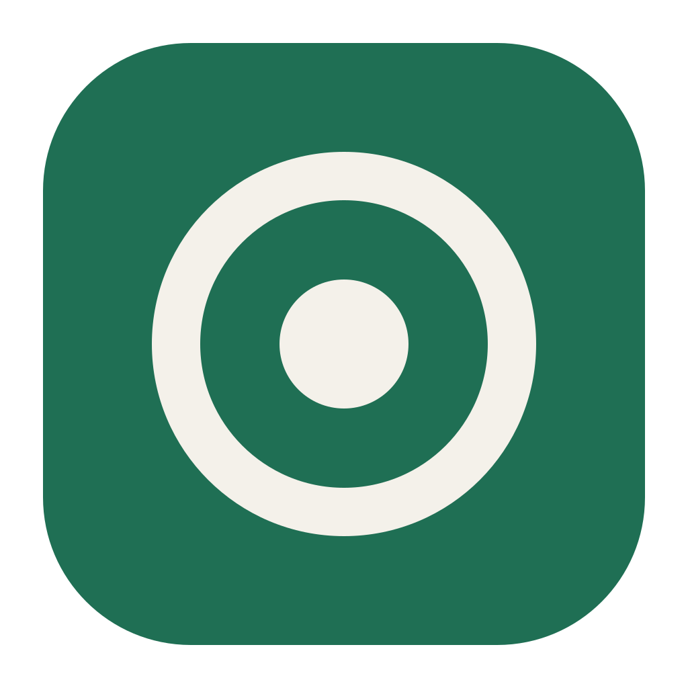

BrightPause
Breaks taken today
0
Take a break now
Resume breaks
Pause
30 min
1 hour
Until tomorrow
Breaks
Eye break every
Look away from the screen
Eye break lasts
Movement break
Replaces one eye break in every few
Every 2nd
Every 3rd
Every 4th
Movement break lasts
During a break
Warn me first
A notification 10 to 30 seconds before
Allow postponing once
2 minutes for eye breaks, 5 for movement
Strict mode
No skipping or postponing
Cover all screens
Sound
Chime
Bell
Soft
Off
Volume
Play
Break screen
Background
The side screens match it
Fitting into your day
Away counts as a break after
The timer starts over when you come back
Start with Windows
Appearance
System
Light
Dark
Shortcuts
Ctrl+Alt+B break now · Ctrl+Alt+P pause 1 hour or resume · Ctrl+Alt+S skip
Updates
Install
BrightPause
BrightPause never goes online unless you ask it to.
Check for updates
Automatic updates
Checks at most once a day
Why these breaks
Every eye break rests your focus on something far away; every few breaks, you stand and move. The tips come from:
American Optometric Association: the 20-20-20 rule
American Academy of Ophthalmology: computers and eye strain
Albulescu et al. 2022, micro-breaks and well-being (PLOS ONE)
Dunstan et al. 2012, breaking up sitting (Diabetes Care)
Canadian Centre for Occupational Health and Safety: working while sitting